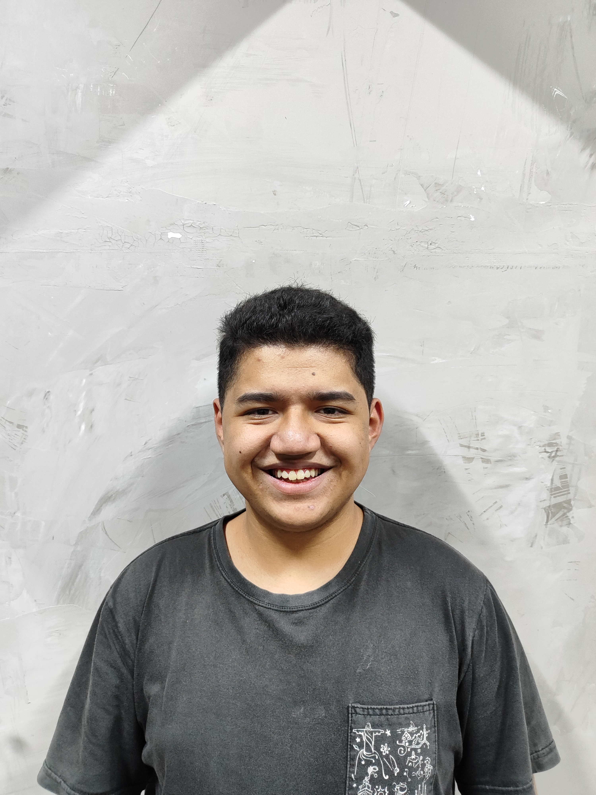
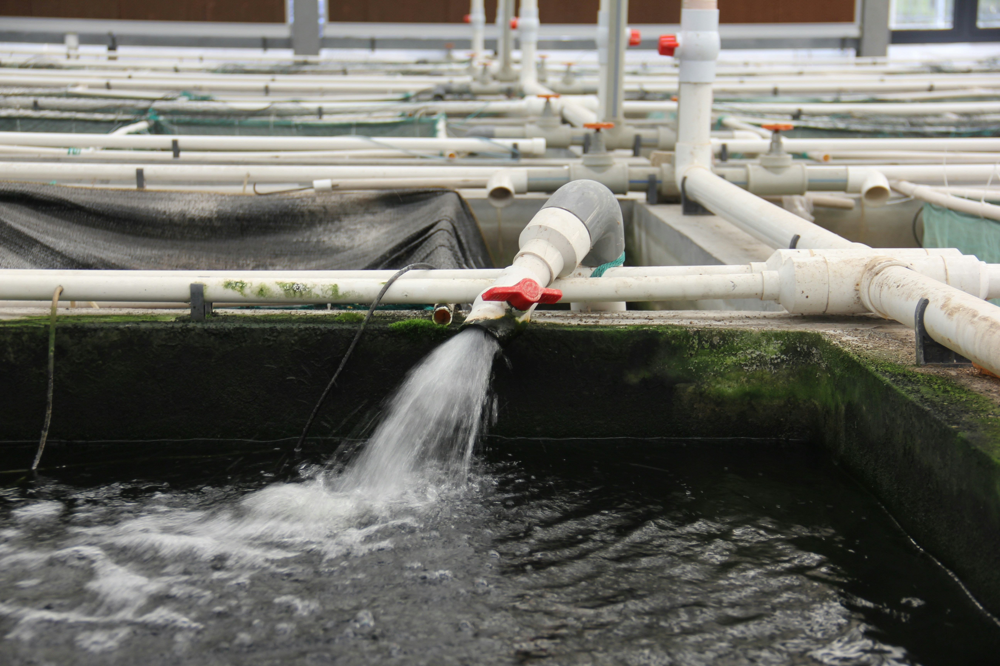

Quem Somos?
— Uma iniciativa que conjuga técnica e experiência do dia a dia para agregar valor ao seu negócio

A Kelper é uma AgriTech especializada em soluções IoT para o crescente setor da piscicultura. Nós acreditamos no uso da tecnologia de forma inteligente para gerar valor e sabedoria ao seu negócio. Por meio do monitoramento em tempo real, da coleta estratégica de dados e da automação de processos, promovemos maior controle produtivo, redução de perdas e aumento da eficiência operacional.
Nossa Equipe
Conheça os profissionais que fazem a Kelper acontecer.

Andy Lin

Guilherme Almeida
Kevin Zancle
Lucas Yugui

O quanto você perde?
— O problema da eutrofização é uma dor real no universo da piscicultura e pode estar prejudicando a sua produção neste exato momento. Para te ajudar a entender exatamente o quanto este problema está impactando a sua produção, criamos uma calculadora que estima os valores em jogo quando se trata do seu negócio. Utilizá-la é tão simples quanto inserir os dados nos campos ao lado.
Eutrofização
— A eutrofização é o aumento excessivo de nutrientes, principalmente nitrogênio e fósforo, em ambientes aquáticos (rios, lagos, mares), resultando na proliferação de algas, diminuição drástica do oxigênio e morte de organismos.
Cálculo
— O cálculo realizado pela calculadora leva em consideração o valor investido e o prejuízo de um viveiro que sofreu o processo de eutrofização.
Valores
— Leva-se em consideração que o preço de cada arduíno + sensores e máquina central custa R$5.000
Exemplo:
1 Arduino + Sensores +Máquina Central = R$5.000
2 Arduinos + Sensores +Máquina Central = R$10.000
• Sobre do Viveiro
• Sobre o Lote
• Outros
Kelper-LDR
A Solução para o problema da Eutrofização tem nome — Kelper-LDR.
O Kelper-LDR é uma solução IoT que utiliza sensores de luminosidade potentes e placas de microcontroladores para monitorar em tempo real os índices de incidência luminosa sobre os seus viveiros.
Os dados coletados pelo Kelper-LDR, são tratados e enviados à nossa base de dados onde, ao serem servidos para o cliente através de nossa plataforma web, permitem que o piscicultor tenha total ciência sobre os parâmetros de qualidade da água em seus viveiros. Entendendo a melhor forma de agir, e quando agir — de modo a nunca ser pego de surpresa e evitando gastos com perdas inesperadas.
